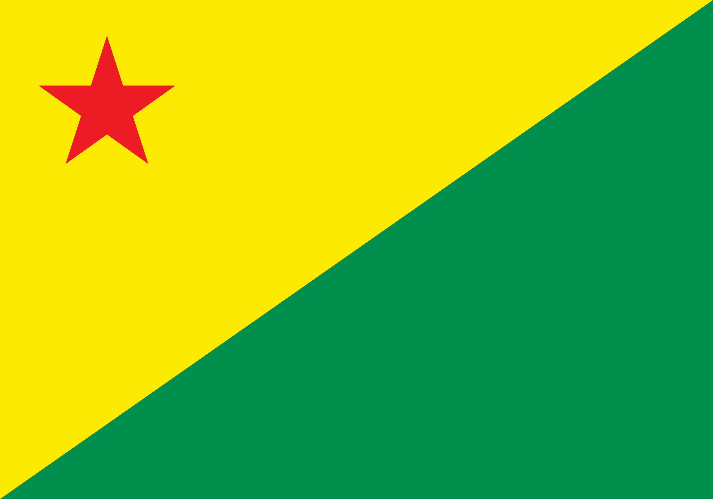

| Estado |
População |
Capital |
Região |
Bandeira |
| Acre |
880.631 habitantes |
Rio Branco |
Norte |
 |
| Alagoas |
3.125.254 habitantes |
Maceió |
Nordeste |
|
| Amapá |
802.837 habitantes |
Macapá |
Norte |
 |
| Amazonas |
4.281.209 habitantes |
Manaus |
Norte |
|
| Bahia |
14.136.417 habitantes |
Salvador |
Nordeste |
 |
| Ceará |
8.791.688 habitantes |
Fortaleza |
Nordeste |
 |
| Distrito Federal |
2.923.369 habitantes |
Brasília |
Centro-Oeste |
.svg.png) |
| Espírito Santo |
4.102.129 habitantes |
Vitória |
Sudeste |
|
| Goiás |
7.350.483 habitantes |
Goiânia |
Centro-Oeste |
 |
| Maranhão |
7.010.960 habitantes |
São Luís |
Nordeste |
 |
| Mato Grosso |
3.836.399 habitantes |
Cuiabá |
Centro-Oeste |
 |
| Mato Grosso do Sul |
2.778.986 habitantes |
Campo Grande |
Centro-Oeste |
 |
| Minas Gerais |
21.322.691 habitantes |
Belo Horizonte |
Sudeste |
|
| Pará |
8.116.132 habitantes |
Belém |
Norte |
 |
| Paraíba |
4.145.040 habitantes |
João Pessoa |
Nordeste |
 |
| Paraná |
11.824.665 habitantes |
Curitiba |
Sul |
 |
| Pernambuco |
9.058.155 habitantes |
Recife |
Nordeste |
|
| Piauí |
3.375.646 habitantes |
Teresina |
Nordeste |
 |